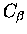
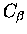

It may also be useful to have a set of averaged coordinates derived
from a protein structural family. This makes it possible to see what
portions of the structure are common to all members of the family (i.e.
the common core). The program AVESTRUC takes the output from STAMP
(i.e. an aligned family of protein structures), and generates a PDB file
containing averaged coordinates for the common core as identified by
STAMP. For example, to generate the averaged coordinates for the
aspartic proteinase domains one needs to type:
avestruc -f ac_prot.8 -o ac_prot_ave.pdb
The file ac_prot_ave.pdb will contain a set of averaged
 atoms taken
by averaging the coordinates for those positions within the file
ac_prot.8 that are found to be structurally equivalent. To obtain a poly
Alanine set of coordinates (i.e. including main chain and 
coordinates), type:
atoms taken
by averaging the coordinates for those positions within the file
ac_prot.8 that are found to be structurally equivalent. To obtain a poly
Alanine set of coordinates (i.e. including main chain and 
coordinates), type:
avestruc -f ac_prot.8 -o ac_prot_ave.pdb -polyA
Note that this will only work if all main chain atoms are found in the file
(i.e. it won't work if the PDB files contain only
 atoms).
atoms).
A useful feature in AVESTRUC in stamp version 4.1 is the use of the -ident
and -cons options. The program now labels all residues in the averaged model
as `UNK'. If positions are totally conserved across all structures in the
averaged model, the `-ident' option will name residues accordingly. The -cons
option will label residues additionally as conserved in character if all
amino acids in the set have the following properties:
| SMA | small |
| TIN | tiny |
| POL | polar |
| HYD | hydrophobic |
| POS | positive |
| NEG | negative |
| CHA | charged |
| ARO | aromatic |
| ALI | aliphatic |
| BRA | branched |
See Taylor (1986) for a description of amino acid properties.
Another new feature is that the tempeature factors now reflect whether
postions are structural conserved, or simply fortitously aligned. If you
add the option `-aligned' to the command line, all positions that are
not matched to a gap will be considered in the generation of the
averaged model. If you then colour your model according to temperature
(e.g. with RasMol) the blue regions will correspond to those that
are structural equivalent (as you have defined or by default) whereas
the red regions will show those that are simply in the same position in
the sequence alignment.